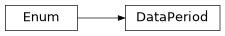
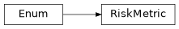

pipefolio.enums#
Classes#
Enum for periodicity of data. |
|
Enum for selection modes. |
|
Enum for optimization objectives. |
|
Enum for risk metrics. |
Module Contents#
- class pipefolio.enums.DataPeriod(*args, **kwds)#
Bases:
enum.EnumEnum for periodicity of data.
- DAILY#
Daily periodicity.
- WEEKLY#
Weekly periodicity.
- MONTHLY#
Monthly periodicity.
- QUARTERLY#
Quarterly periodicity.
- YEARLY#
Yearly periodicity.
- DAILY = 'daily'#
- WEEKLY = 'weekly'#
- MONTHLY = 'monthly'#
- QUARTERLY = 'quarterly'#
- YEARLY = 'yearly'#
- class pipefolio.enums.SelectMode(*args, **kwds)#
Bases:
enum.EnumEnum for selection modes.
- LARGEST#
Select the largest values.
- SMALLEST#
Select the smallest values.
- LARGEST#
- SMALLEST#
- class pipefolio.enums.OptimizeObjective(*args, **kwds)#
Bases:
enum.EnumEnum for optimization objectives.
- MINIMIZE_RISK#
Minimize risk.
- MAXIMIZE_RETURN#
Maximize return.
- MAXIMIZE_UTILITY#
Maximize utility (return minus risk).
- MAXIMIZE_RATIO#
Maximize the ratio of return to risk.
- MINIMIZE_RISK#
- MAXIMIZE_RETURN#
- MAXIMIZE_UTILITY#
- MAXIMIZE_RATIO#
- class pipefolio.enums.RiskMetric(*args, **kwds)#
Bases:
enum.EnumEnum for risk metrics.
- VARIANCE#
Variance
- SEMI_VARIANCE#
Semi-variance
- STANDARD_DEVIATION#
Standard deviation
- SEMI_DEVIATION#
Semi-deviation
- MEAN_ABSOLUTE_DEVIATION#
Mean absolute deviation
- CVAR#
Conditional value at risk
- CDAR#
Conditional drawdown at risk
- WORST_REALIZATION#
Worst realization
- MAX_DRAWDOWN#
Maximum drawdown
- AVERAGE_DRAWDOWN#
Average drawdown
- VARIANCE#
- SEMI_VARIANCE#
- STANDARD_DEVIATION#
- SEMI_DEVIATION#
- MEAN_ABSOLUTE_DEVIATION#
- CVAR#
- CDAR#
- WORST_REALIZATION#
- MAX_DRAWDOWN#
- AVERAGE_DRAWDOWN#